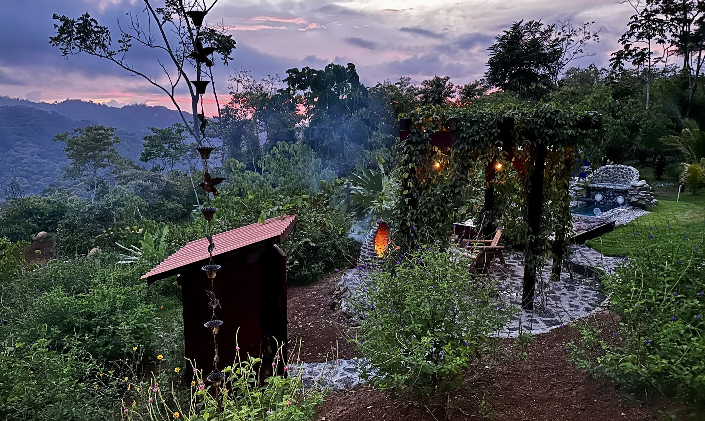
A private hacienda-style farmhouse suspended above the cloud forest canopy, on a working single-source coffee estate between the Pérez Zeledón valley and the Pacific coast.
Request Access →Reclaimed hardwood, deep eaves, and screened corredores designed for the mountain's constant cross-breeze — a house that keeps the jungle close without ever letting it in.
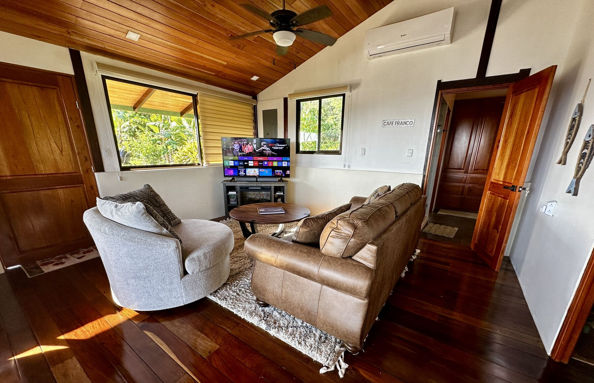
A vaulted, wood-lined living room under a high pitched roof, screened windows on two sides framing the jungle beyond. A queen pullout sofa bed sleeps a second couple or the kids. Ceiling fans, no air conditioning needed above 1,000m.
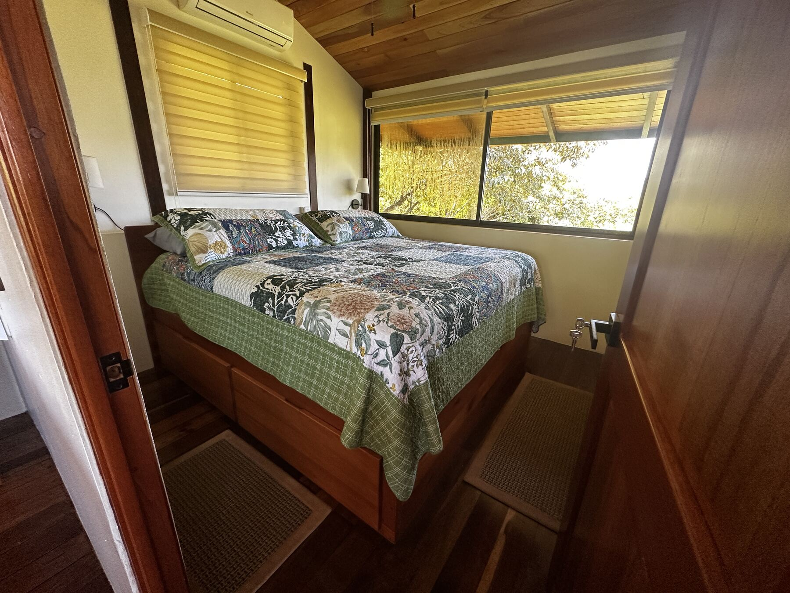
King bed, wood-beamed ceiling, and a window that opens straight onto the canopy — cool mountain air moving through from dusk until dawn.
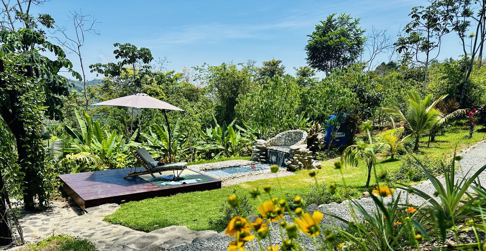
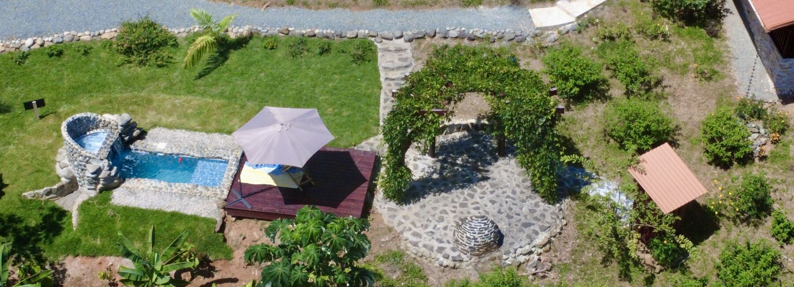
A stone-carved plunge pool and sun deck cut into the garden, banana leaves and jungle pressing in on every side. No neighbors in sight, no sound but the birds.
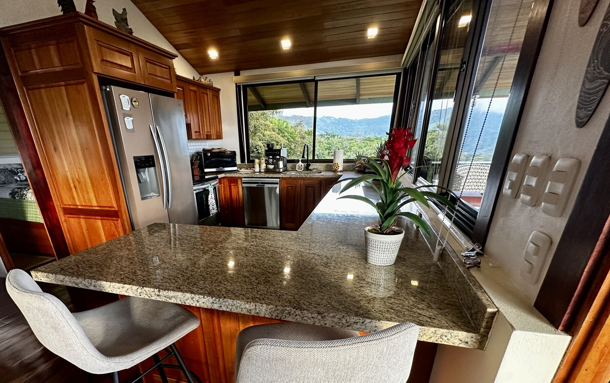
Full kitchen with granite counters and a bar for four, the mountains framed in the window over the sink — stocked from the farm and the San Isidro market.
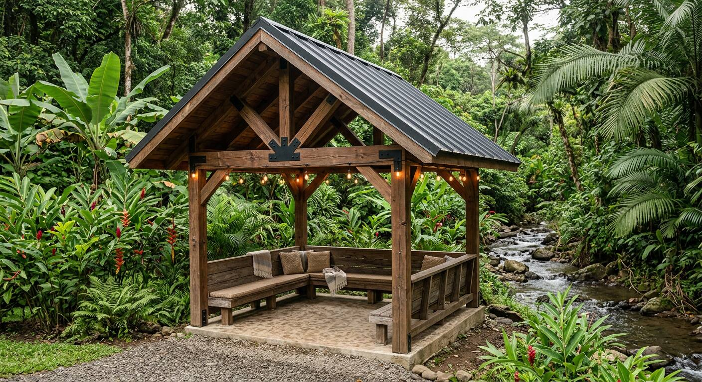
A covered wooden pavilion built over its own stream, strung with market lights and built-in bench seating — the spot for an evening drink once the sun drops behind the ridge.
Casa Dosel sits at the top of a 2.5-acre single-source Arabica estate — the same land, the same cloud forest boundary, quietly organized around the house.
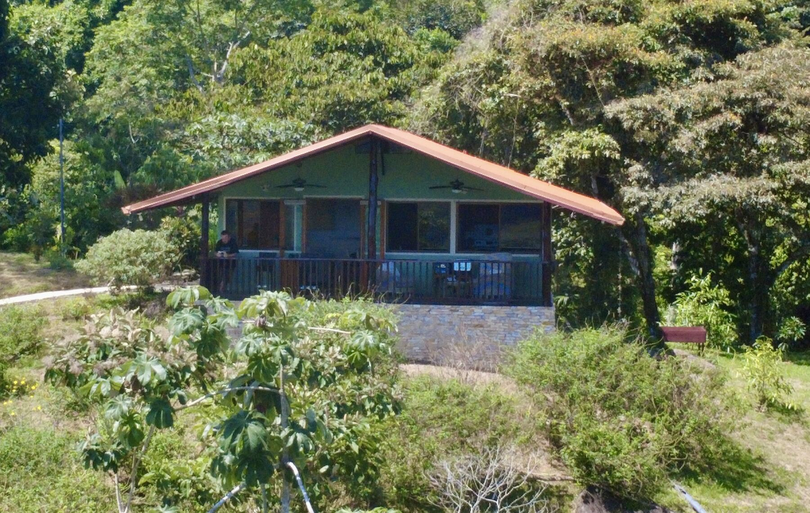
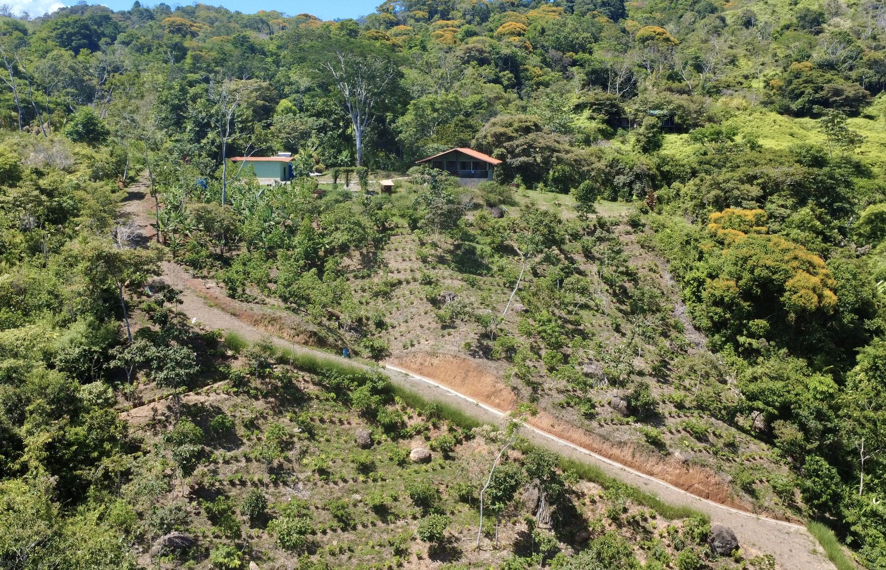
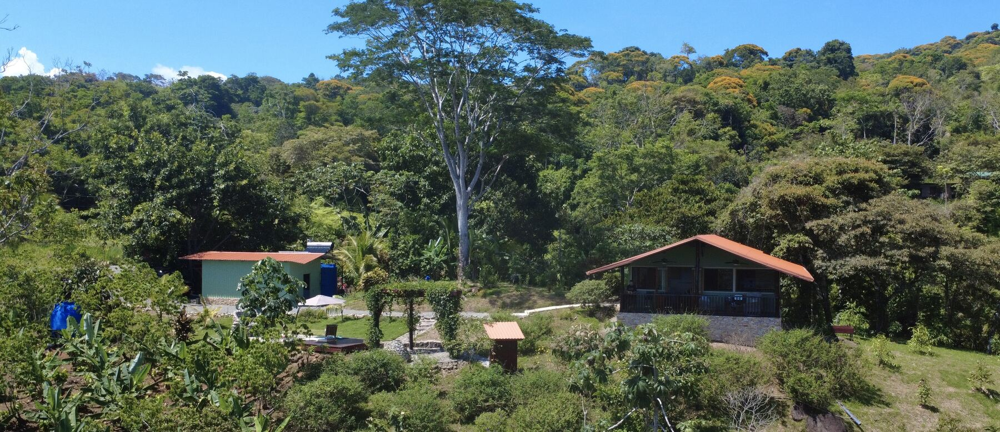
Tinamastes sits in the Diamante Valley, a mountainous corridor between San Isidro de El General and the Pacific — close enough to Dominical and Uvita for a beach day, high enough to sleep under a blanket every night of the year. Nauyaca Waterfalls is 3km away.
Caracaras, toucans, hawks, and pizotes move through the property regularly — the estate borders enough primary forest that wildlife is a daily presence, not an occasional sighting.
The land is farmed organically alongside the working Arabica plants that surround the house — shade trees, citrus, and banana draw scarlet macaws to nest freely in the canopy above the terrace.
Casa Dosel runs entirely off-grid: 16kW of solar covers the house, and a spring-fed tank supplies both the kitchen taps and the irrigation lines running through the coffee rows.
There is one gated road in. No through traffic, no shared driveway, no other structures visible from the house.
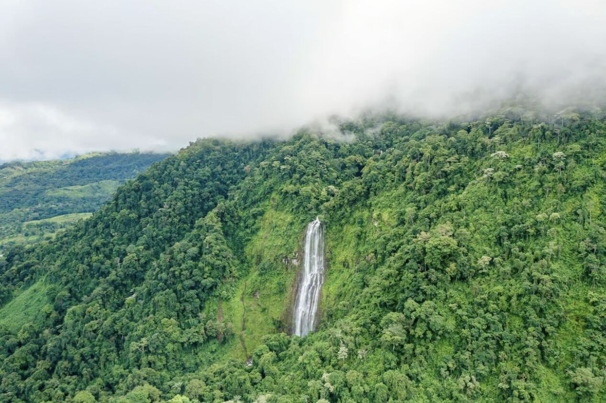
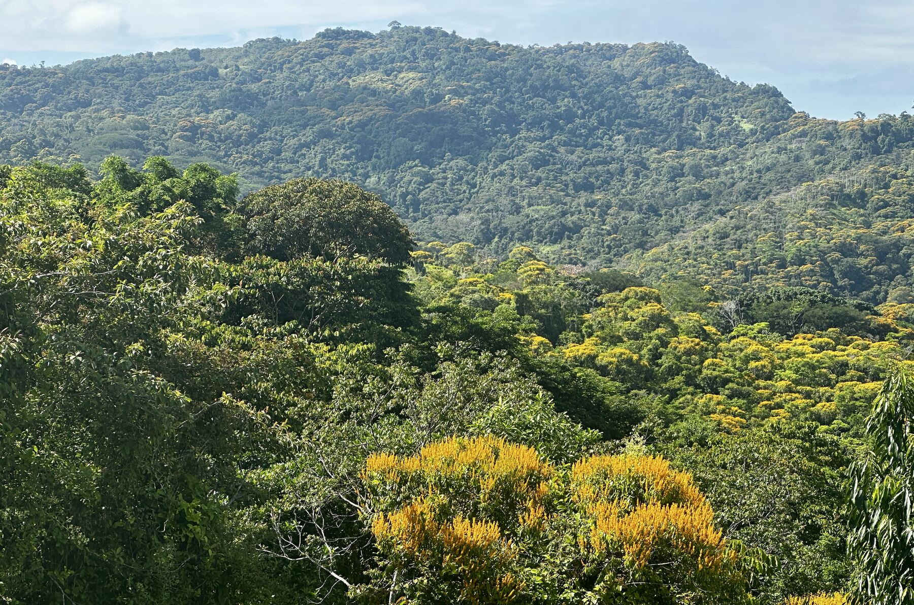
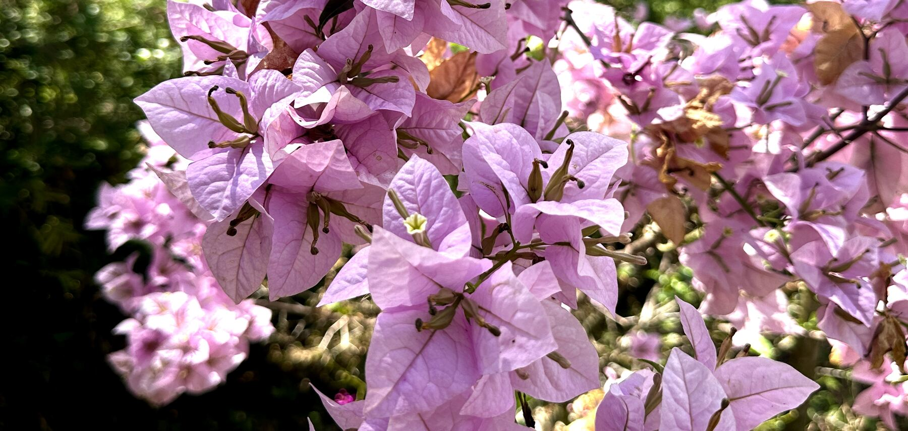
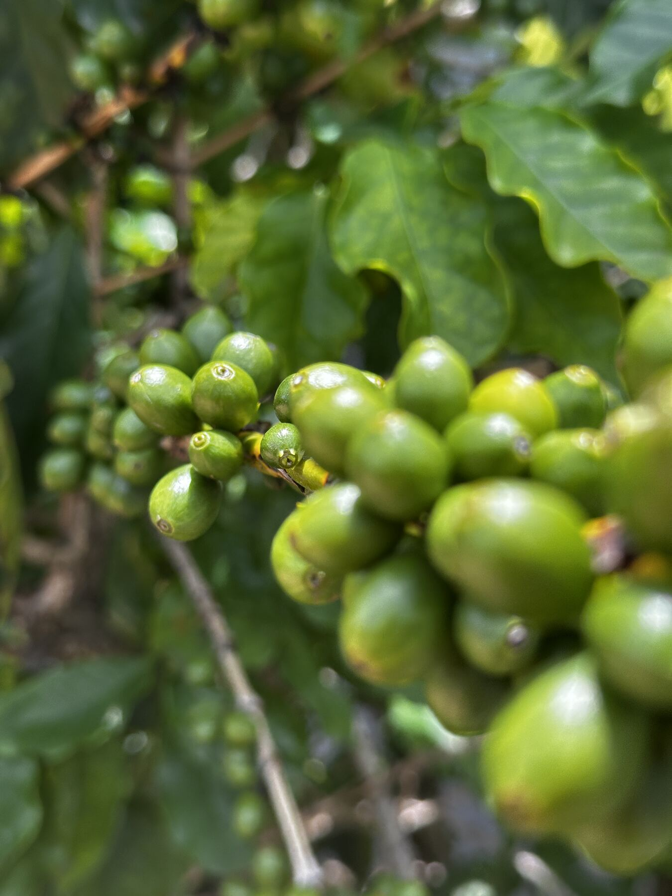
"Casa Dosel isn't a listing carved out of a larger business — it's a single family's private mountain house, offered the way we'd want to be hosted ourselves."
We're applying to Thirdhome because we'd rather trade stays with member families than run a commercial rental. Casa Dosel is the farmhouse on Café Franco, our working coffee estate — the house isn't next door to the farm, it's part of it.
For Thirdhome members and private inquiries — we typically respond within 48 hours with availability and access details.